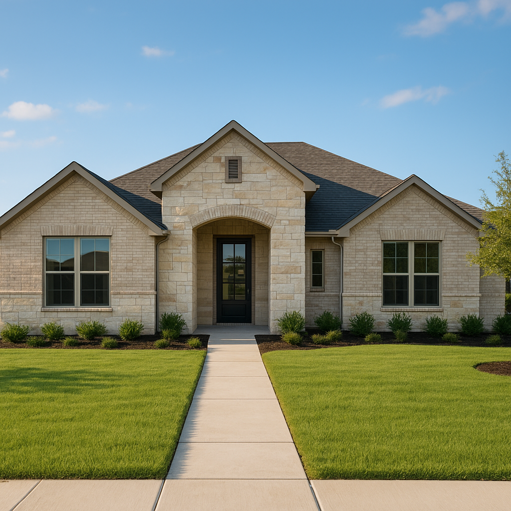

I'm Bond Peter Njoku, a licensed Mortgage Loan Officer (NMLS #2670329), and jumbo loans come up most often with move-up buyers I work with in Collin County — Plano, McKinney, Frisco, and Prosper — where home prices climb well past what a standard conventional loan will cover. A jumbo loan isn't a special program with a scary name; it's simply financing above the conforming loan limit, and once you understand where that line sits and what qualifying requires, it's a very manageable process.
What Makes a Loan "Jumbo"
Every year, the Federal Housing Finance Agency (FHFA) sets a conforming loan limit — the maximum loan amount that Fannie Mae and Freddie Mac will purchase or guarantee. Any loan amount above that limit is classified as jumbo, which means it doesn't qualify for the same backing and instead relies on the individual lender's own underwriting guidelines and investor requirements. Since Dallas, Tarrant, Collin, Denton, and Rockwall counties all fall within the same Dallas-Fort Worth-Arlington metropolitan statistical area, they share one conforming limit — the line into jumbo territory doesn't shift much just because you're shopping in Plano instead of Garland.
| County | MSA | Conforming Limit Applies |
|---|---|---|
| Dallas | Dallas-Fort Worth-Arlington | Standard 2026 conforming limit |
| Tarrant | Dallas-Fort Worth-Arlington | Standard 2026 conforming limit |
| Collin | Dallas-Fort Worth-Arlington | Standard 2026 conforming limit |
| Denton | Dallas-Fort Worth-Arlington | Standard 2026 conforming limit |
| Rockwall | Dallas-Fort Worth-Arlington | Standard 2026 conforming limit |
Because the FHFA updates this figure annually based on national home price movement, the number from last year isn't necessarily the number that applies today — call or text me at 469-545-7180 and I'll give you the current published limit before you start shopping in that price range.
Down Payment and Credit Requirements
Jumbo loans generally require more skin in the game than conforming conventional loans. Where a conventional loan might allow 3-5% down, jumbo programs commonly start at 10-20% down depending on the lender and loan amount, and credit score requirements tend to run higher too. Debt-to-income ratios are usually held to a tighter standard, and many jumbo lenders want to see substantial cash reserves remaining in the bank after closing — sometimes six to twelve months of payments in reserve. None of this is meant to scare buyers off; it's simply a different risk profile since these loans aren't backed by a government-sponsored enterprise.
| Requirement | Typical Conforming Loan | Typical Jumbo Loan |
|---|---|---|
| Minimum down payment | 3-5% | 10-20% |
| Minimum credit score | 620+ | 680-720+ |
| Cash reserves after closing | Often minimal | 6-12 months typical |
| Backed by GSE? | Yes (Fannie/Freddie) | No — lender/investor guidelines |
Are Jumbo Rates Higher?
The old assumption is that jumbo rates always run higher than conforming rates, but that's not a fixed rule — depending on the lending environment, jumbo rates have sometimes matched or even beaten conforming rates, particularly for well-qualified borrowers with strong credit and reserves. I pull live pricing on both structures for move-up buyers rather than assuming one is automatically cheaper, since the gap changes with market conditions. This matters most for buyers in Collin County move-up price ranges of $400K-$600K and above, where a purchase can sit right on either side of the conforming line depending on down payment size.
Staying Under the Limit vs. Going Jumbo
Sometimes a slightly larger down payment is all it takes to keep a loan amount under the conforming limit and avoid jumbo underwriting altogether — I run this comparison for every move-up buyer whose purchase price puts them close to the line. Other times, going jumbo is simply unavoidable given the home price, and in those cases I focus on making sure my client's reserves and documentation are lined up ahead of time so underwriting moves smoothly. Either way, this is a conversation worth having before you write an offer, not after.
If you're shopping for a move-up home in Plano, McKinney, Frisco, or anywhere else in Collin County where prices commonly cross the conforming line, call or text me at 469-545-7180 and I'll tell you exactly where the current limit sits and whether your target price puts you into jumbo territory. You can also check my McKinney location page or my broader conventional loan overview for related guidance.
Frequently Asked Questions
What loan amount is considered jumbo in DFW in 2026?
A jumbo loan is any loan amount that exceeds the conforming loan limit set by the Federal Housing Finance Agency for Dallas-Fort Worth, which applies uniformly across Dallas, Tarrant, Collin, Denton, and Rockwall counties since they share one conforming limit. I'm Bond Peter Njoku (NMLS #2670329) — call or text me at 469-545-7180 for the current conforming limit and whether your target loan amount crosses it.
Do jumbo loans require a bigger down payment?
Typically yes — most jumbo programs require at least 10-20% down compared to conventional conforming loans that can go as low as 3-5%, and the exact minimum depends on the lender, loan amount, and your credit profile. I'm Bond Peter Njoku (NMLS #2670329), call or text me at 469-545-7180 and I'll pull current jumbo down payment requirements for your loan amount.
Is it harder to qualify for a jumbo loan?
Jumbo loans generally carry stricter requirements than conforming loans — higher credit scores, lower debt-to-income ratios, and larger cash reserves after closing are common, since these loans aren't backed by Fannie Mae or Freddie Mac. I'm Bond Peter Njoku (NMLS #2670329) — call or text me at 469-545-7180 to see where your profile stands against typical jumbo guidelines.
Are jumbo loan rates higher than conventional rates?
It varies — jumbo rates have historically run higher than conforming rates, but in some rate environments they've actually come in close to or even below conforming rates depending on the lender and your qualifying profile, so I always compare current live pricing rather than relying on the old assumption. I'm Bond Peter Njoku (NMLS #2670329) — call or text me at 469-545-7180 for a current rate comparison.
See If Your Purchase Needs a Jumbo Loan
I'm Bond Peter Njoku (NMLS #2670329). I'll confirm the current conforming loan limit for your county and tell you exactly what qualifying for a jumbo loan requires. Call or text me at 469-545-7180, message me on WhatsApp, or start your pre-approval online.